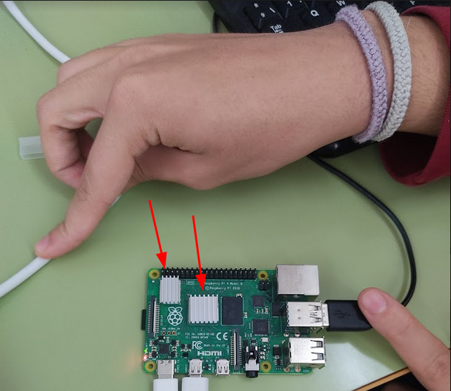

Lo único que hemos hecho es diseñar nuestro modelo de carcasa y ir a la impresora 3D que tenemos en el centro e imprimir las partes de la carcasa para la Raspberry Pi.
Lo único que hemos hecho es diseñar nuestro modelo de carcasa y ir a la impresora 3D que tenemos en el centro e imprimir las partes de la carcasa para la Raspberry Pi.
Lo siguiente que haremos será colocar los disipadores de la Raspberry para que no se caliente y funcione bien.
Una vez tengamos todas las partes impresas y los disipadores colocados, ya podremos encajar la carcasa en la Raspberry y enchufar todos los cables.